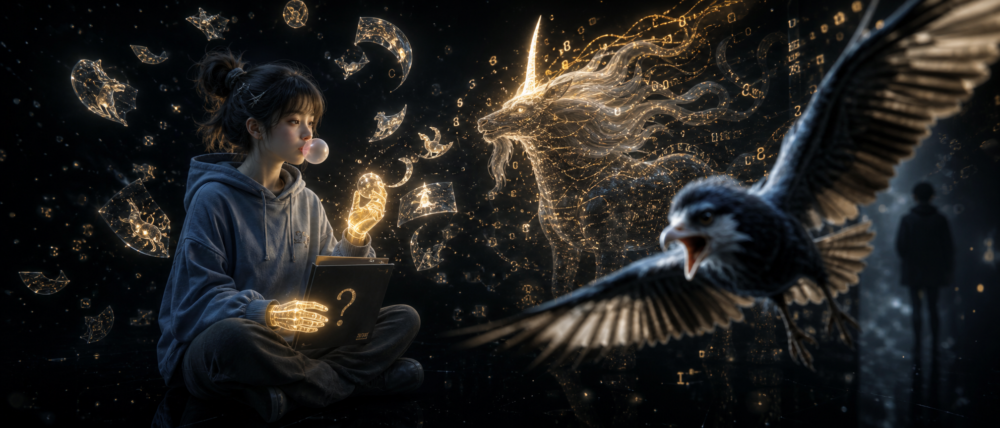
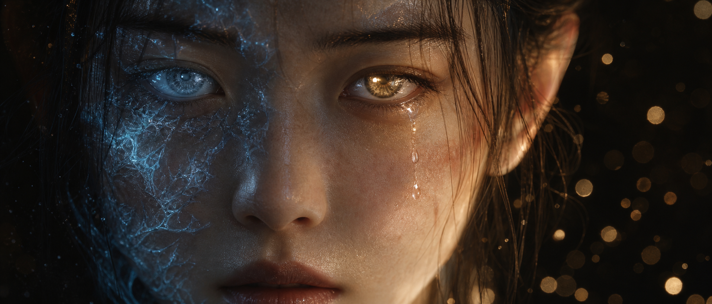

AIGC 打戏拆解知识库
面向 AIGC 短视频创作的打戏拆解框架 — 从风格定义、镜头语言、动作编排到 Prompt 工程的完整方法论。目标风格：暗黑深空 + 金色能量光效 + 赛博仙侠融合。
01 视觉风格基座
风格是知识库的顶层锚点，所有后续拆解、Prompt、素材选择都围绕这套视觉语言展开。以下风格特征从参考图中提取，作为所有打戏内容的统一审美标准。


风格 DNA 提取
色调体系
光影特征
- 强明暗对比（chiaroscuro）
- 体积光 / 光晕散景
- 自发光效果（能量源）
- 多光源复杂照明
质感层次
- 粒子特效（金色浮粒）
- 线框 / 全息投影
- 真人写实纹理
- 烟雾与大气透视
风格融合
- 赛博朋克（科技线条）
- 东方仙侠（灵兽/气功）
- 现代写实（服装/道具）
- 暗黑奇幻（深渊/迷雾）
风格变体：水墨风
除了主风格（暗黑深空 + 金色能量）外，水墨风是另一个重要的打戏风格变体。源自国漫《剑来》二创视频的高人气呈现方式，核心是东方水墨美学与战斗动作的融合。
水墨色调
笔墨质感
- 飞白笔触（快速挥剑）
- 浓淡渲染（力量层次）
- 墨色晕染（冲击扩散）
- 留白构图（意境空间）
水墨特效
- 墨点飞溅（打击反馈）
- 墨线拖尾（武器轨迹）
- 泼墨冲击波（爆炸/碰撞）
- 水墨化消散（角色消失）
运动特征
- 流体过渡（场景转换）
- 笔触速度线（动感强化）
- 墨色渐变（蓄力→释放）
- 毛笔笔锋（攻击方向）
风格控制关键词（Prompt 用）
dark cosmic void background, golden particle effects, volumetric lighting, bioluminescent energy patterns,
wireframe holographic projections, photorealistic human textures, dramatic chiaroscuro,
cyber-wuxia fusion, ethereal smoke, amber glow, bokeh light particles,
cinematic widescreen composition, hyper-detailed digital painting
Chinese ink wash painting style, sumi-e aesthetic, rice paper texture background,
brush stroke motion trails, ink splash impact effects, flying white brushwork,
monochrome with cinnabar red accent, fluid ink wash transitions,
calligraphic composition, negative space (liubai), ink diffusion,
traditional Chinese martial arts, wuxia ink painting animation
02 三大核心拆解模块
每一段打戏视频的拆解围绕三个维度展开：镜头设计、动作编排、特效与能量。这三个维度共同构成了打戏的"语法"。
flowchart TB
S["一场打戏场景"]
subgraph Lens["镜头设计"]
L1["景别策略"]
L2["运镜轨迹"]
L3["构图法则"]
L4["视角切换节奏"]
end
subgraph Action["动作编排"]
A1["攻击/防御模式"]
A2["连招组合设计"]
A3["节奏与呼吸"]
A4["角色空间走位"]
end
subgraph VFX["特效与能量"]
V1["能量光效类型"]
V2["粒子与碎片"]
V3["碰撞冲击波"]
V4["武器拖尾/光影"]
end
S --> Lens
S --> Action
S --> VFX
Lens -- "决定视觉呈现" --> Action
Action -- "触发特效时机" --> VFX
VFX -- "增强镜头冲击" --> Lens
镜头设计
景别策略
打戏中景别的切换节奏直接影响观众的紧张感。拆解时需标注每个镜头的景别类型和切换时机。
运镜轨迹
记录镜头的运动方式，包括跟随、环绕、推拉、甩镜头等，分析运镜如何强化动作力度。
- 跟随运动轨迹（tracking shot）
- 环绕拍摄（orbit）
- 快速推拉（push/pull）
- 甩镜头（whip pan）
- 慢动作运镜（slow-mo track）
构图法则
打戏构图的核心是动态平衡——角色在画面中的位置、力量线的方向、负空间的运用。
- 对角线构图（力量方向）
- 中心对称（对峙感）
- 三分法则（角色站位）
- 景深分层（前中后景）
视角切换节奏
打戏的剪辑节奏由视角切换频率控制。快速连击 = 频繁切换，蓄力大招 = 持续长镜头。
- 快速切换（0.5s 内，连击感）
- 中速切换（1-2s，标准节奏）
- 慢速切换（3s+，蓄力/情感）
- 定格画面（关键帧，冲击力）
动作编排
攻击 / 防御模式
每个角色应有独特的攻击和防御风格。拆解时需归类动作类型并记录触发条件。
| 动作类型 | 典型表现 | 对应景别 |
|---|---|---|
| 近身格斗 | 拳脚、摔投、锁喉 | 中景 + 近景 |
| 武器对抗 | 挥剑、格挡、枪刺 | 中景 + 特写 |
| 远程攻击 | 气功波、暗器、能量弹 | 远景 + 追踪 |
| 闪避身法 | 翻滚、侧移、腾空 | 中景 + 慢动作 |
| 必杀技 | 蓄力 + 大范围释放 | 远景 + 特写 |
连招组合设计
好的打戏在于连招的编排——攻防转换的节奏、招式的衔接流畅度、以及"呼吸点"的放置。
- 三拍节奏：攻击 → 防御/闪避 → 反击（基本循环）
- 升级变奏：试探 → 加速 → 高潮 → 收尾
- 交错剪辑：A出招 → B反应 → 交叉剪辑双方
- 呼吸点：每 3-5 拍插入一个"停顿瞬间"
节奏与呼吸
打戏节奏如音乐——有快板和慢板。拆解时需标注每个片段的节奏类型和 BPM 感知。
- 急板（120+ BPM）：快速交锋
- 行板（80-100 BPM）：战略对峙
- 慢板（60 BPM 以下）：蓄力/情感
- 停顿（休止符）：关键帧定格
角色空间走位
记录角色在场景中的移动轨迹和相对位置变化，影响构图和运镜策略。
- 直线冲锋（力量感）
- 弧线移动（优雅/闪避）
- 螺旋上升（升级/升华）
- 背对背（双打配合）
特效与能量
能量光效类型
参考图中的金色能量是核心视觉元素。需要建立能量光效的分类词典。
- 内在能量：手部/眼部发光（觉醒状态）
- 投射能量：能量弹、光束、气功波
- 护盾/屏障：半透明防御罩
- 环境能量：地面裂纹、空气扭曲
- 变异能量：身体局部能量化（如冰蓝脉络）
粒子与碎片
粒子系统是打戏场景氛围的关键。拆解时需记录粒子的类型、运动方向和密度。
- 金色浮游粒子（环境氛围）
- 碰撞碎片（地面/墙壁/武器）
- 能量火花（武器碰撞）
- 烟雾/尘土（落地冲击）
- 数据流（赛博风格点缀）
碰撞冲击波
攻击命中时的视觉反馈——冲击波的设计决定了"打中"的力度感。
- 环形冲击波（平面扩散）
- 球形冲击波（3D 扩散）
- 定向冲击（锥形/线性）
- 延迟爆发（先压缩后释放）
武器拖尾 / 光影
武器的运动轨迹通过拖尾光效来增强速度感和力量感。
- 弧线拖尾（挥剑轨迹）
- 点状残影（快速移动）
- 能量注入（武器发光）
- 碰撞闪光（武器交击瞬间）
03 AIGC 制作流水线
以下是从抖音教程（AIGC淇水汤汤）提取并扩展的完整制作流程。每个步骤都对应知识库中的一个可复用模块。
素材准备
图片素材预处理，去除水印、修复细节
AI 图生视频
上传图片 + Prompt，生成动作视频片段
Prompt 工程
动作描述词库 + 风格控制词 + 镜头指令
后期合成
片段衔接、节奏加速、特效叠加
成片输出
最终武侠战斗短片
Step 1：素材准备详解
图片素材要求
- 角色全身/半身清晰正面照
- 武器道具（剑、枪、拳套等）
- 场景背景（暗黑系优先）
- 姿态参考（武术动作定格）
预处理流程
- PS 去除水印、多余文字
- Level TV 修复武器细节（剑刃、枪尖）
- 统一色调匹配目标风格
- 抠图备用（换背景场景）
Step 2：AI 图生视频详解
图生视频的关键在于一图一动作——每张图片配一个明确的动作 Prompt，不要贪多。每次只描述一个动作单元（如"挥剑横斩"），复杂连招通过后期剪辑衔接实现。
单片段生成原则
- 每个片段 2-4 秒为宜
- 动作方向明确（左→右、上→下）
- 保持角色外观一致性
- 同场景光照条件一致
片段衔接要点
- 首尾帧姿态需对齐（剪辑点）
- 运动方向连续性
- 光影方向一致
- 预留过渡帧（1-2秒）
Step 4：后期合成详解
剪辑节奏控制
- 急促交锋：0.3-0.5s/镜头
- 标准对打：0.8-1.2s/镜头
- 蓄力/定格：2-3s/镜头
- 加速处理（1.2x-1.5x）增强力度
音效与 BGM
- 打击音效（拳脚/武器碰撞）
- 环境音（风声、碎石）
- 能量音效（充能/释放）
- BGM 节奏匹配剪辑点
04 Prompt 模板库
Prompt 是 AIGC 制作的核心资产。以下四类词库覆盖了打戏视频生成的主要需求，持续积累、逐步扩展。
动作动词库
slash horizontally | thrust forward | parry blade | dodge roll | backflip |
spinning kick | uppercut punch | charge attack | leap forward | aerial spin |
block with shield | sweep leg | grab and throw | power strike | rapid combo |
energy blast | shockwave release | weapon draw | dual wield strike
镜头描述库
extreme close-up on eyes | slow motion tracking shot | orbiting camera 360 |
low angle looking up | high angle aerial view | whip pan left to right |
zoom in on weapon impact | pull back to reveal full scene |
handheld shaky cam | static wide shot | dutch angle tilted frame |
dolly zoom (vertigo effect) | over-the-shoulder POV
特效描述库
golden energy trail following sword slash | blue bioluminescent cracks spreading on skin |
shockwave ring expanding from impact point | floating golden particles swirling |
holographic wireframe overlay on character | debris and dust particles exploding |
energy aura glowing around fists | lens flare from weapon collision |
smoke and mist atmospheric depth | data stream / matrix-like falling characters |
--- ink wash variants --- |
ink splash and flying brush strokes on impact | brush stroke motion trail |
sumi-e ink wash explosion (splash-out shockwave) | ink diffusion dissolve effect |
calligraphic speed lines | fluid ink wash transition (scene change)
风格控制词
dark cosmic void background, volumetric golden lighting, cinematic 21:9 aspect ratio,
photorealistic rendering, hyper-detailed textures, dramatic chiaroscuro,
cyber-wuxia aesthetic, ethereal smoke effects, bokeh light particles,
4K resolution, film grain subtle, color grading teal and orange
Prompt 组合模板
一个完整的打戏片段 Prompt = 动作动词 + 角色描述 + 镜头语言 + 特效描述 + 风格控制
A warrior in dark hoodie slashes horizontally with a glowing golden sword,
extreme close-up on the blade, golden energy trail following the slash,
sparks and debris flying from the impact, dark cosmic void background,
volumetric golden lighting, cinematic 21:9 aspect ratio,
photorealistic, dramatic chiaroscuro, cyber-wuxia aesthetic,
slow motion, 4K resolution
female swordsman in flowing robes slashes horizontally with a glowing blade,
Chinese ink wash painting style, sumi-e aesthetic,
ink splash and flying brush strokes exploding from the slash impact,
brush stroke motion trail following the blade, monochrome with cinnabar red accent,
rice paper textured background, calligraphic composition,
dynamic low angle shot, slow motion, negative space (liubai)
05 案例拆解模板
每次刷到值得拆解的打戏视频，按以下统一模板录入知识库。先填框架，再逐步补充细节。
案例拆解模板
首个案例：抖音教程拆解
Case #001 — AI真人武侠对打
swordsman slashing with sword, dynamic combat pose |
warrior parrying with red-tasseled spear |
two fighters clashing weapons, sparks flying |
martial arts combat, cinematic action
- Level TV 修复武器细节的工作流
- Sedance 2.0 逐片段生成的策略
- 剪映加速衔接的节奏控制
- 先图片后视频的分步制作思路
Case #002：水墨风打斗（剑来 · 宁姚）
Case #002 — 水墨风打斗（剑来·宁姚 vs 搬山猿）
- 全景开场：水墨渲染的环境交代，留白构图建立场景
- 中景对峙：宁姚与搬山猿的站位，水墨笔触勾勒轮廓
- 近景连击：快速切换的攻击镜头，墨色飞溅作打击反馈
- 特写定格：关键时刻的泼墨定格帧，笔锋方向暗示攻击方向
- 慢动作高潮：核心动作放慢，墨线拖尾增强速度感
- 宁姚为刺客型战士——潇洒凌厉、一力降十会
- 攻击模式以剑术为核心：快速横斩、突刺、旋身斩
- 对手搬山猿为力量型：重击、抓取、范围攻击
- 节奏模式：试探（慢）→ 连击（快）→ 蓄力大招（停顿）→ 爆发（泼墨）
- 墨点飞溅：每次武器碰撞时的打击反馈，替代传统火花
- 墨线拖尾：剑刃运动轨迹以毛笔笔锋线条呈现
- 泼墨冲击波：大招释放时的爆炸效果，墨色从浓到淡扩散
- 水墨化消散：被击中角色的消散效果，墨色化开消失
- 流体过渡：镜头切换时使用墨色晕染作为转场
female swordsman in flowing robes slashes horizontally, Chinese ink wash painting style,
ink splash and flying brush strokes on impact, monochrome with cinnabar red accent,
sumi-e martial arts animation, brush stroke motion trail following blade,
rice paper textured background, calligraphic composition, dynamic camera angle,
ink wash explosion on finishing blow, negative space composition
- 水墨特效体系：墨点/墨线/泼墨/消散 — 完整的特效替代方案
- 流体转场方式：墨色晕染替代硬切
- 女战士角色模板：潇洒凌厉 + 一力降十会的刺客型定位
- 留白构图策略：大量负空间增强意境感
- 评论区验证：水墨风打戏在短视频平台有极高人气（200万+赞）
Case #003：古风超然打斗（3000字 Prompt 实践）
来源：抖音 秋小泠 — "又是3000字的提示词，酷就完事了。古风超然打斗戏。" #古风 #AI #古风超然打斗
Case #003 — 古风超然打斗（AI 生成 / 3000字 Prompt）
- 使用约 3000 字的 Prompt 驱动生成 15 秒打斗短片
- 疑似使用 即梦（Jimeng）平台（评论讨论提示词上限问题）
- 灵感来源：齐卡曼来福
- 提示词不公开，需加入作者的"AI漫剧交流学习群"获取
溜溜梅ai剧场（56赞 / 49条回复）：
"做这种单人炫技很简单提示不超一百，最难的是对打戏，双人对打，或者一打多，要做的有张力，速度，碰撞，运镜还要有真实的物理反馈，非常难几乎靠剪辑来拼凑，AI上限也不高会出现穿模武器变化，我就没有见过满意的打戏……追求质量还是人做出来的细致。"
- 即梦平台限制：提示词上限 2000 字，3000 字如何突破是讨论热点
- 单人 vs 双人难度：单人炫技 Prompt 不超 100 字即可，双人对打难度倍增
- AI 打戏痛点：穿模、武器变形、物理反馈差、一致性不足
- 主流策略：几乎靠剪辑拼凑，逐片段生成后合成
- 长 Prompt 策略验证：3000 字级别 Prompt 可生成高质量单片段，但平台有字数限制需注意
- AI 打戏制作共识：评论区形成的行业认知——单人容易、对打极难、靠剪辑拼凑
- 获取更多 Prompt：可加入"AI漫剧交流学习群"获取作者的完整 3000 字 Prompt
- 工具扩展：即梦（Jimeng）平台是 Sedance 之外的重要补充工具
Case #004：《神桥之下》AI漫剧打戏叙事方法论
来源：抖音 AIGC圈圈 — "原创AI漫剧《神桥之下》主角逍遥境实力一览 花里呼哨高燃打斗招式设定" #AI视频 #AI打斗 #AI漫剧
Case #004 — 《神桥之下》AI漫剧（3集系列 / 打斗叙事方法论）
来自第1集描述的核心理念：
"更重要的是打斗连续性能服务剧情和人物，而不是两个人华丽呼哨乱打一通，这是在用打斗讲故事，强化人物特点。"
- 技术现状：AI 已可做到连续打斗下保持角色和场景一致性
- 仍有限制：仍有部分穿帮镜头
- Step 1 突袭：角色被突袭 → 慌张应招、节节后退
- Step 2 调整：稳住阵脚但硬实力不够
- Step 3 发现弱点：对手嗜酒如命（腰上酒葫芦）→ 改抢葫芦
- Step 4 利用弱点：对手慌乱出招变急、愤怒、露破绽
- Step 5 击败：最终击败
一场打斗中塞入了：主角应变能力 + 对手性格弱点 + 局势三次反转
- 尝试类似《剑来》水墨描边的 3D 感（与正集 3D 写实区分）
- 世界观：水神火神大战 → 撞断通天柱 → 绝地天通 → 修行成神需过神桥
- 叙事方式：借说书人展开世界观
- 大量观众使用 @豆包 反向提取视频 Prompt
- "特效堪比剑来"——与专业国漫的横向对比认可
- "@完美世界动画官方 学学别人 AI 的大场面"——AI 漫剧已可对标专业动画
- 打斗叙事五步法：突袭→调整→发现弱点→利用弱点→击败
- 核心理念：打斗服务剧情和人物，不是华丽乱打
- 三反转结构：一场打斗 = 应变能力 + 性格弱点 + 局势反转
- Prompt 获取技巧：用 @豆包 反向分析 AI 视频提示词
Case #005：《众神战争》大规模战争打斗
来源：抖音 梦境工作室 — "第1集 | 《众神战争》第一战 花果山七大圣对战二郎神军团" #孙悟空 #二郎神 #哪吒
Case #005 — 《众神战争》第一战（AI生成 / 大规模军团对决 / 10:17）
- 规模升级：从双人/小队打斗升级为大规模军团对决（七大圣 vs 二郎神军团）
- 法天象地：角色巨型化变身，体型可达山岳级别（评论区讨论规模是否够大）
- 多角色编排：花果山七大圣各自有独特战斗风格，需要分别设计动作
- 长时长挑战：10 分 17 秒的 AI 生成视频，需要大量片段拼接
- 考据纠错：观众对神话设定非常敏感——梅山兄弟被换成四大天王、法天象地规模偏小等
- 同人创作热情：有观众主动投稿建议"梅山七怪和七大圣打"
- IP 热度：孙悟空、二郎神、哪吒等经典 IP 自带流量
- "小时候看到会原地起飞"——AI 动画已达到"童年梦想"级别的视觉效果
- 同类创作者普遍使用 即梦AI + 剪映
- 推荐中"烟戏诸侯"明确标注使用 seedence 2.0 制作
- 标签关联：#ai创作浪潮计划 #抖音ai创作大赛
- 大规模战争打斗模板：军团对决的编排策略——先个体交锋再群体混战最后Boss对决
- 法天象地变身：巨型化变身的视觉呈现方式，适合作为"大招"级别特效
- 经典 IP 策略：孙悟空/二郎神等自带流量，适合做 AIGC 短视频选题
- 评论区互动策略：作者积极回复投稿建议，可引导观众参与创作
- 工具补充：seedence 2.0 是即梦之外的又一个重要工具选项
Case #006：国风变身元素提取
Case #006 — 国风变身元素提取（非完整案例 / 视觉元素库）
| 变身类型 | 集数 | 点赞 | 核心特征 |
|---|---|---|---|
| 国风变身（通用） | 第13集（本集） | 1.9万 | 金色骨骼发光 + 紫色衣袂 |
| 国风武侠招式 | 第14集 | 5,229 | 武术动作融合特效 |
| 国风民俗变身 | 第15集 | 2.5万 | 民俗文化元素 |
| 国风文化特效（诸子百家） | 第16集 | 3.1万 | 先秦文化符号 |
| 国风变身（合集） | 第17集 | 2.1万 | 多样形态变化 |
| 国风民俗变身（微恐） | 第18集 | 7,479 | 暗黑民俗风格 |
变身前（触发态）
- 普通人物形态
- 情绪蓄力（眼神变化）
- 环境气压变化（风起/尘扬）
- 符文/印记发光（身体某处亮起）
变身中（过渡态）
- 骨骼金光结构外露
- 服饰/布料紫色调流转
- 粒子爆散（旧形态碎裂）
- 光芒从体内向外扩散
- 背景暗化 + 主体高光
变身后（完成态）
- 全新服饰/铠甲形态
- 能量光环/护体气场
- 武器具象化（从虚到实）
- 瞳色/发色变化
变身触发关键词
- 情感爆发（愤怒/守护/觉醒）
- 文化共鸣（"想起一位故人"）
- 濒死觉醒（极限突破）
- 传承获得（前人力量注入）
character transformation sequence, golden glowing skeletal structure emerging,
purple flowing garments materializing, energy particles dispersing from old form,
light radiating outward from within body, background darkening with subject highlighted,
new armor/costume materializing, glowing eyes, power aura surrounding body,
weapon manifesting from pure energy, Chinese mythological transformation aesthetic
- 变身三态结构：触发态→过渡态→完成态，可作为打戏中"必杀技/觉醒"的标准视觉模板
- 系列化内容策略：18+集系列证明变身元素可以持续产出，选题涵盖武侠/民俗/诸子百家
- 即梦AI验证：标签明确标注即梦AI，该工具适合生成变身类特效视频
- 文化共鸣触发："你是否想起一位故人"——变身不仅是视觉变化，更是情感/文化认同的触发器
06 与现有知识库联动
打戏拆解知识库不是孤立的，它与您已有的 Obsidian 知识库体系形成互补。以下列出关键联动点。
Obsidian 文件夹结构建议
个人知识库/
├── AIGC打戏拆解/
│ ├── 00_风格基座.md ← 主风格（赛博仙侠）+ 水墨风变体 + 框架说明
│ ├── 01_镜头设计/
│ │ ├── 景别策略.md
│ │ ├── 运镜轨迹.md
│ │ ├── 构图法则.md
│ │ └── 视角切换节奏.md
│ ├── 02_动作编排/
│ │ ├── 攻防模式.md
│ │ ├── 连招组合.md
│ │ ├── 节奏与呼吸.md
│ │ └── 空间走位.md
│ ├── 03_特效与能量/
│ │ ├── 能量光效类型.md
│ │ ├── 粒子与碎片.md
│ │ ├── 碰撞冲击波.md
│ │ └── 武器拖尾光影.md
│ ├── 04_制作流水线/
│ │ ├── 素材准备流程.md
│ │ ├── AI图生视频指南.md
│ │ └── 后期合成指南.md
│ ├── 05_Prompt库/
│ │ ├── 动作动词库.md
│ │ ├── 镜头描述库.md
│ │ ├── 特效描述库.md
│ │ ├── 风格控制词.md
│ │ └── 组合模板.md
│ └── 06_案例拆解/
│ ├── 案例_001_AI武侠对打.md
│ ├── 案例_002_水墨风剑来宁姚.md
│ ├── 案例_003_古风超然打斗3000字Prompt.md
│ ├── 案例_004_神桥之下打斗叙事方法论.md
│ ├── 案例_005_众神战争大规模军团对决.md
│ ├── 案例_006_国风变身元素提取.md
│ └── ...
├── 影视库拉片/ ← 已有，联动引用
├── 蒙太奇/ ← 已有，联动引用
├── 导演思维六大维度/ ← 已有，联动引用
└── 风格积累/ ← 已有，新增赛博仙侠条目
07 后续计划
知识库采用迭代积累策略，以下为优先级排序的后续步骤。
Phase 1 — 立即开始
- 在 Obsidian 中创建 AIGC打戏拆解 文件夹结构
- 将本文档内容拆分为各子模块 .md 文件
- 录入 Case #001 的完整拆解
- 收集更多风格参考图，扩展风格 DNA
Phase 2 — 持续积累
- 每次刷到打戏视频 → 按模板录入案例拆解
- 持续扩充 Prompt 词库（动作/镜头/特效）
- 建立"可复用素材"索引
- 尝试 Sedance 2.0 实际生成测试
Phase 3 — 深度提升
- 拉片经典武侠电影（卧虎藏龙/英雄/剑雨）
- 提取专业武术编排的节奏模式
- 探索更多 AI 模型（Kling/Runway/Pika）
- 建立评分体系（对比自己 vs 参考）
Phase 4 — 创作输出
- 使用知识库素材制作第一支 AIGC 武侠短片
- 迭代优化 Prompt → 输出对比记录
- 形成个人化的打戏制作 SOP
- 反向输出教程内容